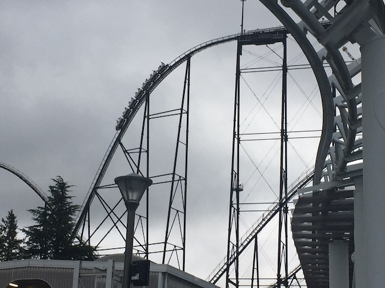
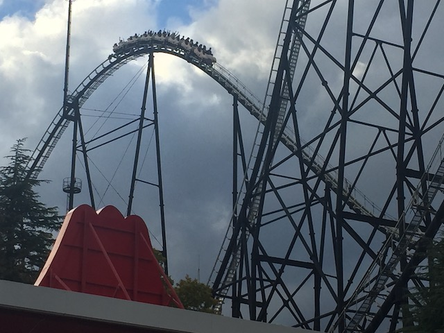
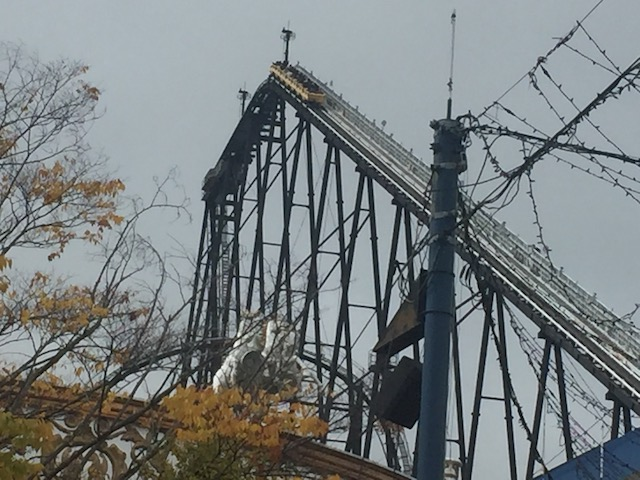

| |
Fujiyama Review

We're here at Fuji-Q Highlands where we're going to be riding Fujiyama. The parks hyper coaster, and the original star attraction at Fuji-Q (well, of the ones that still exist. That old ride, Moonsault Scramble, looked really fun. Wish I got to ride it, shame it closed 18 years before I visited the park). Now Fujiyama is something that might sound horrifying to American coaster enthusiasts. A Togo Hyper coaster! Yes! One exists! And sure enough, it's really good! This may sound shocking, but you have to remember. The Togos in Japan are all really freaking good. But Fujiyama, the Togo Hyper, is the best of them all. Now from the enthusiasts who manage to make it out to Japan, they generally like the Togos. But they're split on Fujiyama, which is a shame as the ride is really underrated. Anyways, we get in the cars, pull down the very loose and free restraints (they feel very similar to the restraints on Phantom's Revenge), and away we go! We roll around a turn and begin climbing the lifthill. Get used to it. It's a big lifthill, and not very fast. So we got a lot of climbing to do. You get a good view of Fuji-Q, and if you're really lucky, you can see Mt. Fuji from the lifthill (I was not able to. Too cloudy the day I rode). Eventually, we reach the top, pass a sign praising the ride for being the tallest coaster in the world (long since been outdated), and then we head down the first drop. It's pretty big, and it pours a lot of speed on us. Love that. We then head up a giant hill which does take away most of our speed, but...WE'RE HIGH UP!!! And we go around another flat turn. Most hyper coasters tend not to have layouts like this. Also, you apparently can see Mt. Fuji from here on a clear day. But yeah, we turn around, and go down another monster drop. SWEET!!! This ride really lays on all the speed! We then rise up another giant hill. We don't lose too much speed, and BAM!!! Nice pop of ejector air at the top! This is really good! We then rise up another big hill, that leads into a curved turnaround. And this is what some people will complain about on the ride. The laterals. This ride has a lot of laterals. And they are AGRESSIVE!!! And I know a lot of coaster enthusiasts HATE agressive laterals. I generally like them (though there are some exceptions), and on Fujiyama, the agressive laterals are a ton of fun! SLAM to the side before heading back down a monster drop! We then head through a really tall, not at all steep, slighty curved, hill. Yeah. This is a really awkward hill, and it can feel kind of weird going through that. But it doesn't matter. This ride is simply too fun to care. We get a little bit of airtime, as we dip down, and rise up again before going through a bigger drop (not to the ground), and through another curved hill. Yeah. Some awkward laterals as we SLAM to the side! But it's just so fun! Love this ride! We then drop down to the ground, rise up a ramp sort of hill (not steep at all), before going through a banked turnaround. More agressive laterals are here, but they're fun! That leads to an awkward turn that leads to another large drop to the ground! SPEED!!! AIRTIME!!! AWESOME!!! We then go through some straight track (the one downside of the ride. This part is kind of awkward). We then go through a low to the ground banked turn. Also, there's some headchoppers as the rest of Fujiyama is right above us. We then head up a hill, it curves at the top, giving us some laterals, and a little airtime, before dipping down. And this is the part of the ride that I like to call "The Coathanger Ending". I call it this, because all the elements from here feel like they were designed on a coathanger, and are very agressive, awkward, and fun. We go through another lateral hill, SLAM!!! AIRTIME!!! Another lateral hill. SLAM!!! AIRTIME!!! Go through some straight track, and a tiny hill before going around another agressive turn SLAM!!!! Before dipping down. We rise up a hill, and glide right into the brake run. Damn! That ride was AWESOME!!! Seriously, I know this ride gets mixed reviews, and it's easy to overlook it thanks to being in the same park as Eejanaika and Dododonpa, but this ride kicks ass! Honestly, if you exclude Mega-Lites, then Fujiyama is the best hyper coaster in Japan! Yes! It's better than Thunder Dolphin! And I stand by that! This ride is awesome! You have to check it out while at Fuiji-Q Highlands.
8/10
Location: Fuji-Q Highlands
Opened: 1996
Built by: Togo
Last Ridden: November 5, 2018
Fujiyama Photos







Home
|